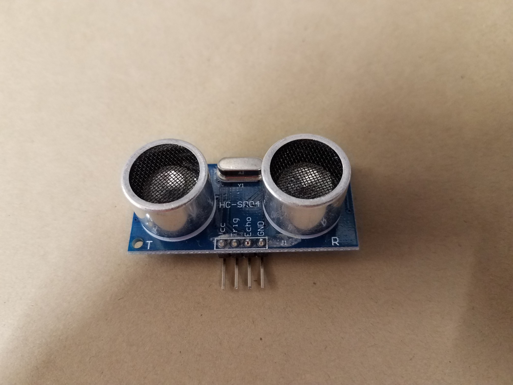
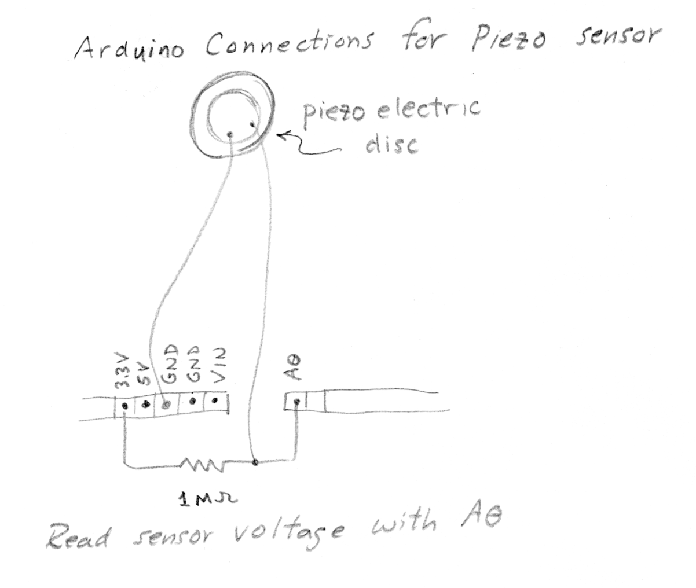
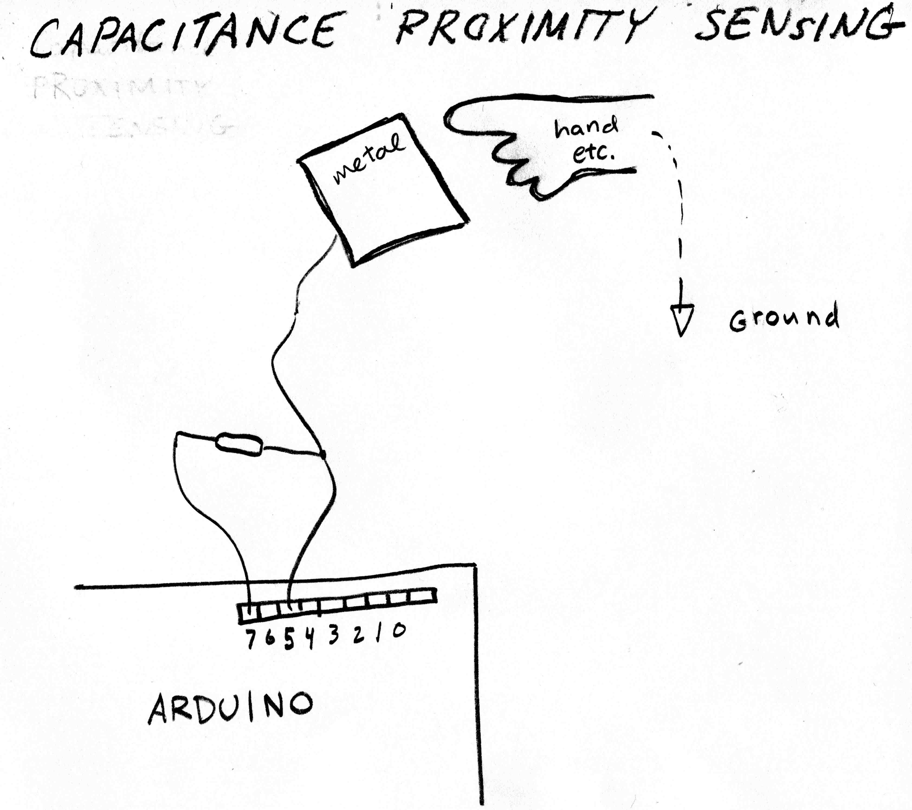
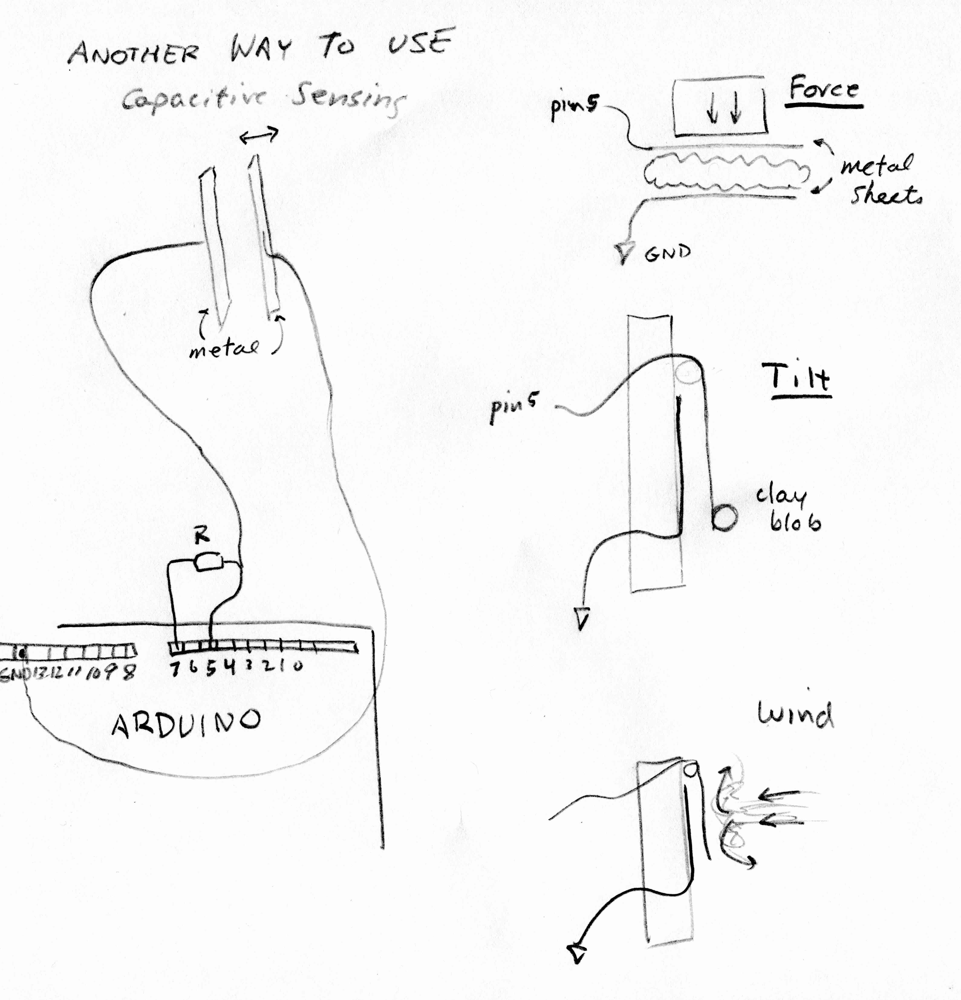

Sensors
Temperature
Link to details on temperature sensors.
Voltage Divider
Many sensors act as resistors that change their resistance as a function of the property measured.
Remember that the voltage across a resistor
is given by Ohm's Law: ΔV = (current)* resistance.
When two resistors are connected in series as shown, the voltage Vout between them
is somewhere between 0V and 5V, with the exact value given by the equation below:
 Use analog read program with Vout connected to A0 pin.
Use analog read program with Vout connected to A0 pin.
A potentiometer allows a continuous variation of voltage. It can be used as a sensor for position or rotation.
Light: Photoresistor.

A photoresistor changes its resistance as a function of light. As it receives more light
its resistance decreases, and the voltage at the point labeled A0 decreases
In the first Arduino workshop in class, we used this configuration, called a voltage divider, measuring the voltage at A0
while changing the amount of light received by the photoresistor. Any of the analog inputs A0 - A5,
could be used. Here is sample code using this configuration.

Instead of using an external voltage divider, you can set up a "pullup" resistor internal to the microcontroller chip
by using "pinMode(A0, INPUT_PULLUP)" in the setup function. This makes the situation shown above, where the value at A0
is near 5V in the dark, and approaches 0 when the photoresistor is illuminated.
Here is sample code using this configuration.
Light: Phototransistor.
A phototransistor functions similarly to a photoresistor. Rather than act as a fixed resistor, the photransistor conducts
more or less current as a function of light level. In some cases they are more sensitive than
photoresistors. We have phototransistors that are sensitive in the visible and in the near infrared.
Sonar distance.
Sonar modules detect distance by timing the echo of a sound pulse.

Piezoelectric element for force, vibration, sound.
Below is shown a piezoelectric disc, and its connections to Arduino.
The 1MOhm resistor keeps the average voltage level near 3.3V. Use the voltage that is generated as the disc flexes to detec vibration, sound, force. Notice that
voltage is transient - the level returns to 3.3 V after a fraction of a second. For steady state measurement of force, try capacitance sensing.


Pyroelectric detector for motion.
Infrared detectors give a signal when motion is detected.

Capacitance.(proximity, force, pressure, tilt. )

This is the configuration used for capacitance sensing with the Arduino. The pin on the left (7 in this example)
is used to charge the plate, through the resistor. The pin on the right (5 in this example) senses the change in voltage as the plate charges up.
The closer the grounded object is to the plate, the larger the capacitance, and the longer it takes to charge. The
time for charging (in arbitrary units) is the number that is reported by the sensing function. To use this sensor, load the Capacitive
Sensing Library. In the Arduino IDE, use "sketch > Include Libraries > Manage Libraries".
Documentation is here.
Here is the sample code for Capactive Sensing that works for the configuration shown above. The resistor R is usually 1 to 10 Mega-ohm. The larger
resistance makes the sensor more sensitive.

As shown above, the capacitive sensor can be used to measure position, force, tilt, airspeed, and more.
Communication using infrared emitter and detector

Board layout for infrared emitter. Signal lead is attached to 5V to run the LED continuosly, or to
a digital pin (12 in this picture).
Here is an Arduino sketch to pulse the IR LED.

Board layout for infrared detector (aka receiver). Signal lead is attached to 5V to run the LED continuosly, or to
a digital pin (12 in this picture).
First set up transmit and receive boards with LED continuously on. Find the signal, and use it to detect objects
interrupting the beam. Here is an Arduino sketch to read the signal.
Next, see how far you can communicate. It may help to pulse the transmitted signal.
Communication using Radio modules (433 MHz)

 <
<
Board layout for the Radio Frequency (RF) transmit module.
Here is an Arduino sketch to pulse the transmitted RF signal. Signal lead
goes to Pin10 on the Arduino.

 <
<
Setup for the RF receiver module. Signal wire (gray) goes to PIN 8. There is an LED between PIN11 and GND.
Solder antennas to both modules. Set the two boards up close together. The LED on the receive board should flash twice per
second if radio connection is successful. See how far apart you can transmit. Here is an Arduino sketch to read the signal.